Este manual te acompaña en el uso del panel de Punto Neutro, el lugar desde donde el equipo publica y cuida todo lo que aparece en el sitio. No necesitas saber de computación: cada tarea está explicada paso a paso y con imágenes.
1.1 El sitio y el panel
Punto Neutro tiene dos partes que trabajan juntas:
El sitio: lo que ve cualquier persona que entra a Punto Neutro. Ahí están las notas, el glosario, el podcast y el Buzón Comunitario.
El panel: un espacio privado, solo para el equipo, donde se escriben, corrigen y publican esos contenidos. Todo lo que cambies en el panel se refleja en el sitio.
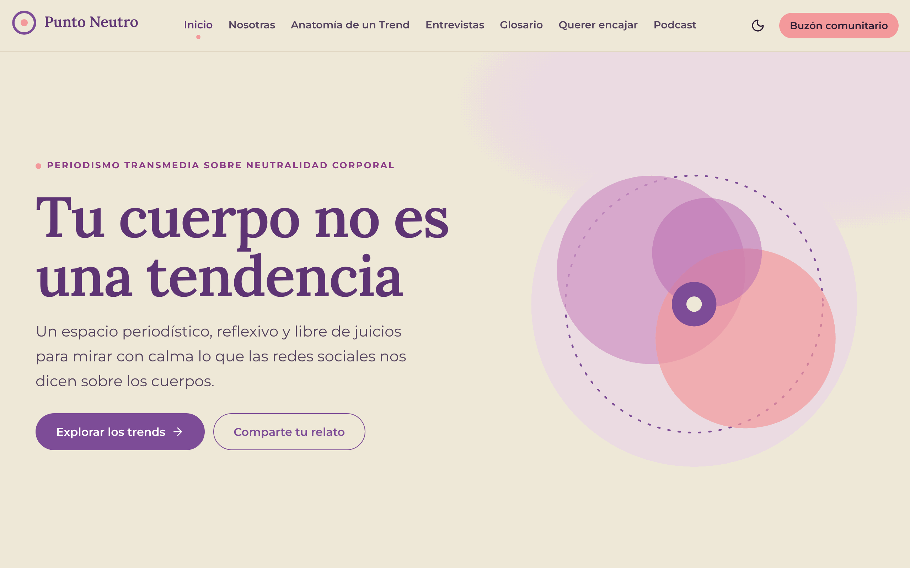
La portada del sitio, tal como la ven las visitas. Todo lo que aparece aquí se edita desde el panel.
1.2 Quién puede hacer qué
Cada persona del equipo entra con su propia cuenta. Hay dos tipos de cuenta (llamados roles):
Tarea
Editora
Administración
Escribir y publicar notas, artículos, entrevistas, glosario y podcast
Sí
Sí
Editar el equipo (sección Nosotras) y subir imágenes
Sí
Sí
Revisar y publicar relatos del Buzón Comunitario
Sí
Sí
Eliminar definitivamente un relato del buzón
No
Sí
Cambiar textos del sitio, logo, ícono de la pestaña, portadas, contacto y redes
No
Sí
Crear cuentas para otras personas y ver el historial de cambios
No
Sí
¿No ves alguna opción del menú?
Es normal: el panel solo muestra lo que tu rol puede usar. Si necesitas acceso a algo más, pídeselo a una persona con rol de Administración.
1.3 Cómo leer este manual
A lo largo del manual encontrarás estos recuadros:
Consejo
Una recomendación para hacer la tarea más fácil o con mejor resultado.
Importante
Algo que conviene revisar antes de continuar para no cometer errores.
Cuidado editorial
Recordatorios éticos para tratar con respeto temas sensibles y a las personas que nos escriben.
Cuando el manual nombra un botón, aparece así: Publicar. Las opciones del menú aparecen así: Glosario. Los nombres de los campos que hay que llenar aparecen en morado.
Capítulo 2
Primeros pasos
Cómo entrar al panel, orientarte en él, cuidar tu cuenta y salir de forma segura.
2.1 Entrar al panel
Abre el navegador (Chrome, Safari, Firefox o Edge) y escribe la dirección del sitio seguida de /admin. Por ejemplo: puntoneutro.cl/admin. También puedes bajar hasta el final de cualquier página del sitio y hacer clic en Acceso equipo.
Escribe tu Correo y tu Contraseña. Te los entrega una persona con rol de Administración.
Haz clic en Ingresar.
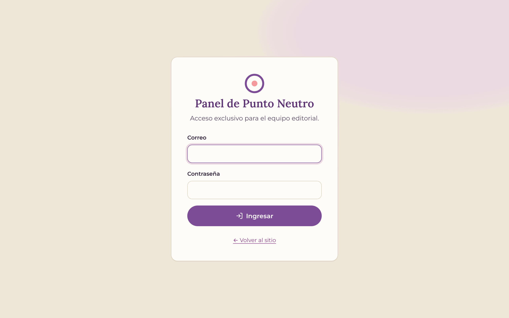
Pantalla de ingreso.
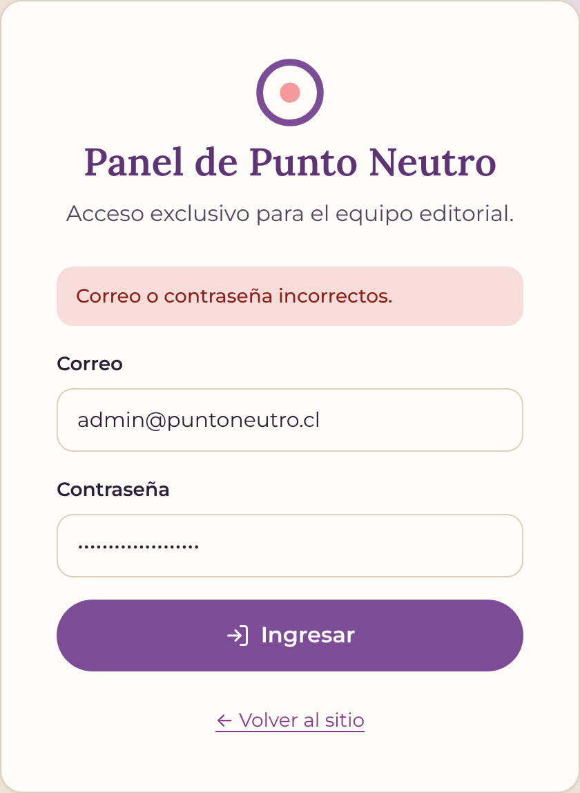
Si el correo o la contraseña no coinciden, aparece un aviso en rojo.
Por seguridad, la sesión dura unas horas
Unas horas después de ingresar, el panel te pedirá tu correo y contraseña otra vez. Es normal y protege la información del buzón.
2.2 El Resumen: tu punto de partida
Al entrar verás el Resumen. Es una foto del estado del sitio y de lo que está pendiente:
Tarjetas con números: relatos por revisar, relatos marcados por el filtro, notas publicadas, entrevistas, términos del glosario, artículos de Querer encajar, episodios e integrantes del equipo.
Notas publicadas sin autora: aparece solo si hay notas que todavía no tienen autora asignada (ver capítulo 4).
Pendientes de configuración: datos que faltan en el sitio, como el correo de contacto o las redes sociales.
Actividad reciente: los últimos cambios hechos por el equipo.
Atajos: los botones Nueva nota y Revisar buzón, arriba a la derecha.
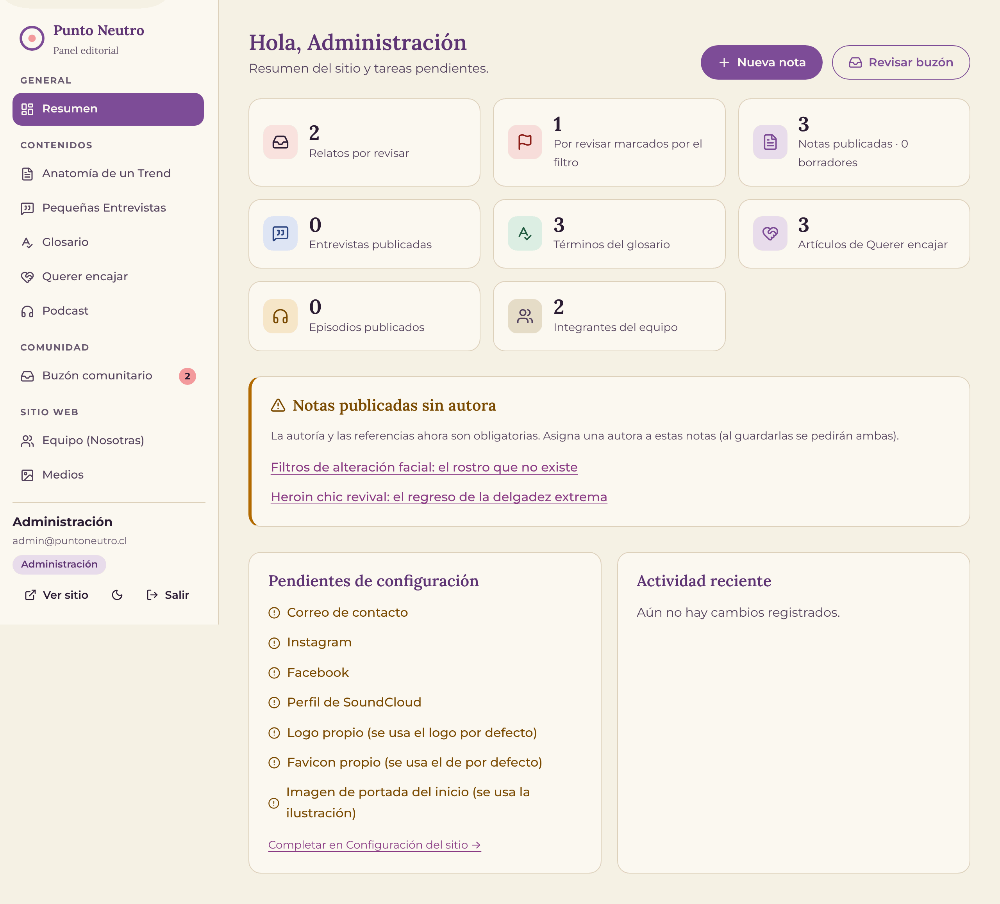
El Resumen del panel.
2.3 El menú
A la izquierda está el menú, ordenado por temas. La opción en la que estás aparece resaltada en morado. El número rosado junto a Buzón comunitario indica cuántos relatos esperan revisión.
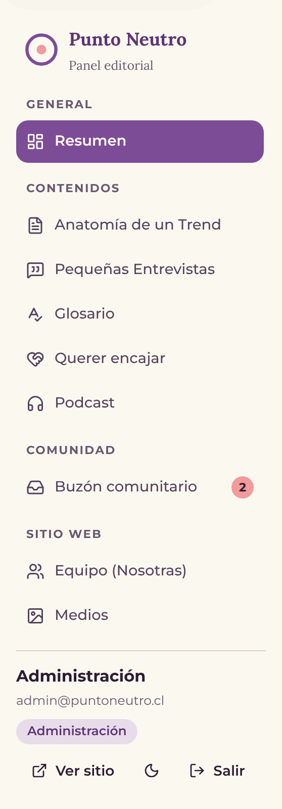
El menú del panel.
Grupo
Para qué sirve
General
El Resumen.
Contenidos
Anatomía de un Trend, Pequeñas Entrevistas, Glosario, Querer encajar y Podcast.
Comunidad
El Buzón comunitario.
Sitio web
Equipo (Nosotras), Medios (imágenes) y Configuración del sitio.
Administración
Usuarios y roles, e Historial de cambios.
Al final del menú están tu nombre, el botón Ver sitio (abre el sitio en otra pestaña), el botón de la luna para cambiar entre modo claro y oscuro, y Salir.
2.4 Cambiar tu contraseña
Haz clic en tu nombre, al final del menú. Se abre Mi cuenta.
Escribe tu Contraseña actual, luego la Nueva contraseña (mínimo 10 caracteres) y repítela.
Haz clic en Actualizar contraseña.
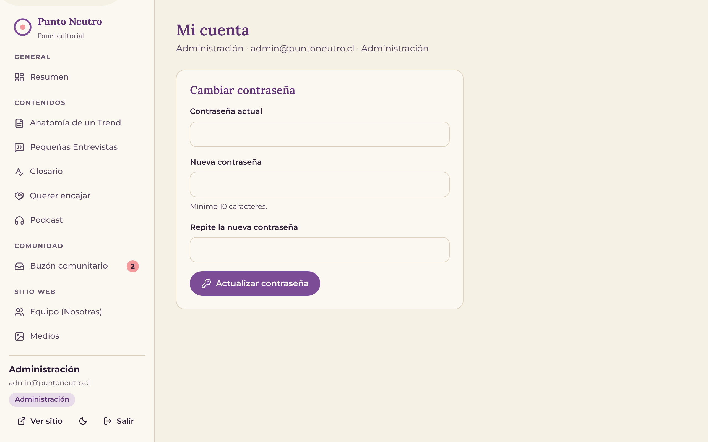
La página Mi cuenta.
La primera vez que entres
Cambia la contraseña que te entregaron por una propia. Usa una frase fácil de recordar para ti y difícil de adivinar, por ejemplo: MiPerroComeManzanas2026.
2.5 Cerrar sesión
Haz clic en Salir, al final del menú. El panel te pedirá confirmar. Hazlo siempre que uses un computador compartido.
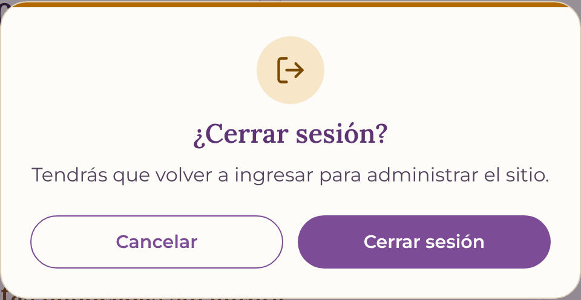
Confirmación para cerrar sesión.
2.6 Usar el panel desde el celular
El panel funciona en el celular. El menú queda escondido para dejar más espacio: tócalo con el botón de las tres líneas (☰), arriba a la izquierda. Para cerrarlo, toca la X o cualquier parte fuera del menú.
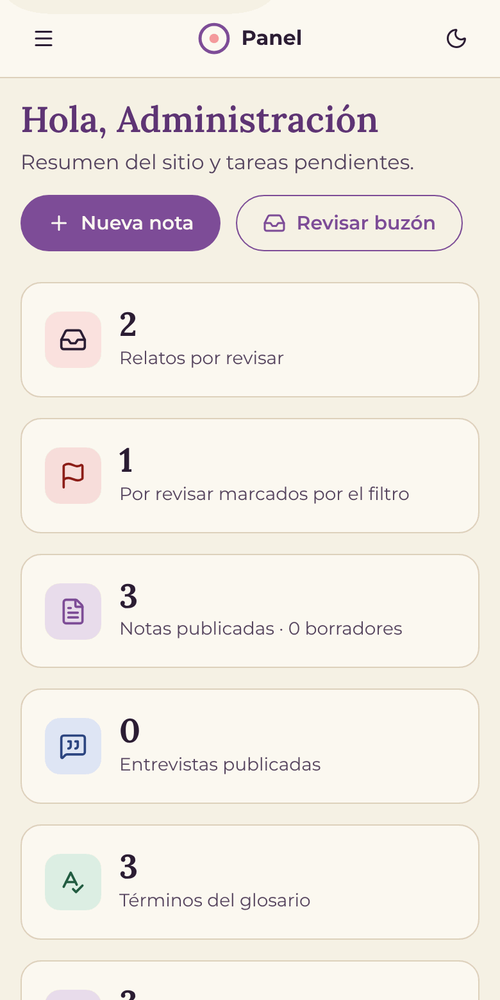
El panel en el celular.
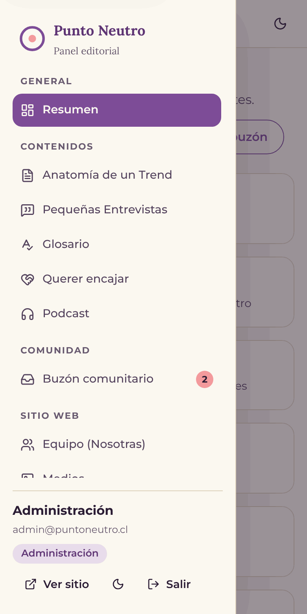
El menú abierto en el celular.
Para escribir notas largas es más cómodo un computador. El celular es ideal para revisar el buzón o hacer correcciones rápidas.
Capítulo 3
Lo básico que se repite en todo el panel
Estas acciones funcionan igual en todas las secciones. Si las aprendes una vez, sirven para todo el panel.
3.1 Borrador y publicado
Las notas, artículos y entrevistas tienen dos estados:
Borrador (etiqueta amarilla): solo lo ve el equipo en el panel. Puedes guardarlo las veces que quieras, aunque esté incompleto.
Publicado (etiqueta verde): está visible en el sitio para todo público.
Arriba de cada editor hay una barra con los botones principales. Cambian según el estado:
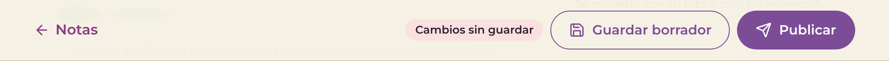
En un borrador: Guardar borrador y Publicar. El aviso «Cambios sin guardar» recuerda que hay algo pendiente de guardar.
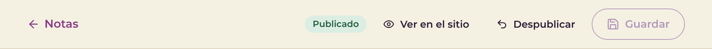
En un contenido publicado: Ver en el sitio, Despublicar (vuelve a borrador) y Guardar (los cambios se ven de inmediato en el sitio).
3.2 Mensajes de confirmación
Cada vez que guardas, publicas o eliminas algo, aparece un mensaje en la esquina inferior derecha:
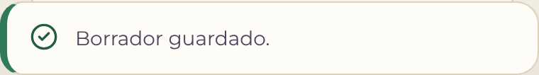
Mensaje verde: todo salió bien.
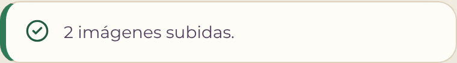
Los mensajes desaparecen solos después de unos segundos.
Si algo falla (por ejemplo, se cortó internet), el mensaje es rojo y explica qué pasó. Tu trabajo no se pierde: espera un momento y vuelve a intentarlo.
3.3 Las preguntas de seguridad
Antes de una acción importante (publicar, despublicar, eliminar o cambiar datos del sitio), el panel pregunta si estás segura. Lee el mensaje y elige:
Cancelar si cambiaste de opinión. No pasa nada.
El botón de color (por ejemplo Publicar o Eliminar nota) para confirmar.
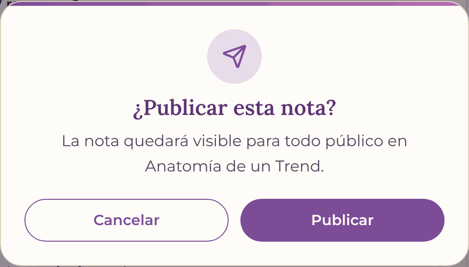
Confirmación antes de publicar.
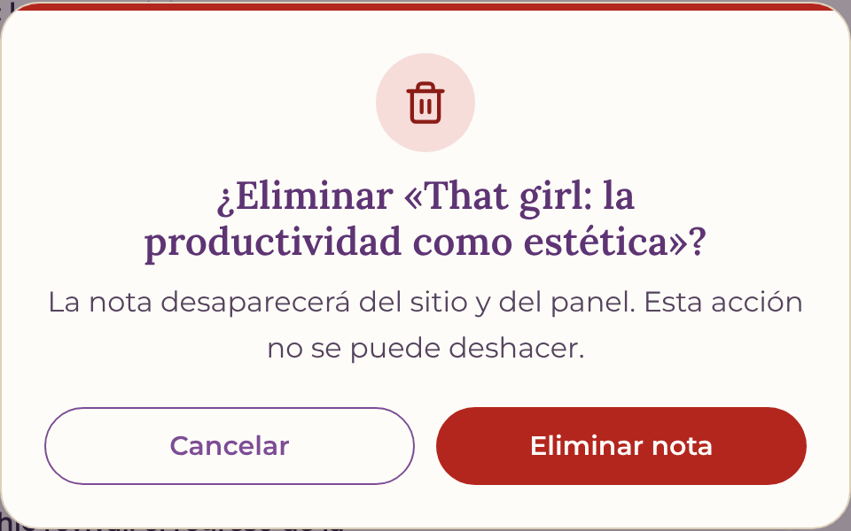
Las acciones que no se pueden deshacer usan un botón rojo.
3.4 Si intentas salir sin guardar
Si estás escribiendo y haces clic en otra sección del menú sin guardar, el panel te avisa. Elige Seguir editando para volver a tu texto, o Salir sin guardar si quieres descartar los cambios.
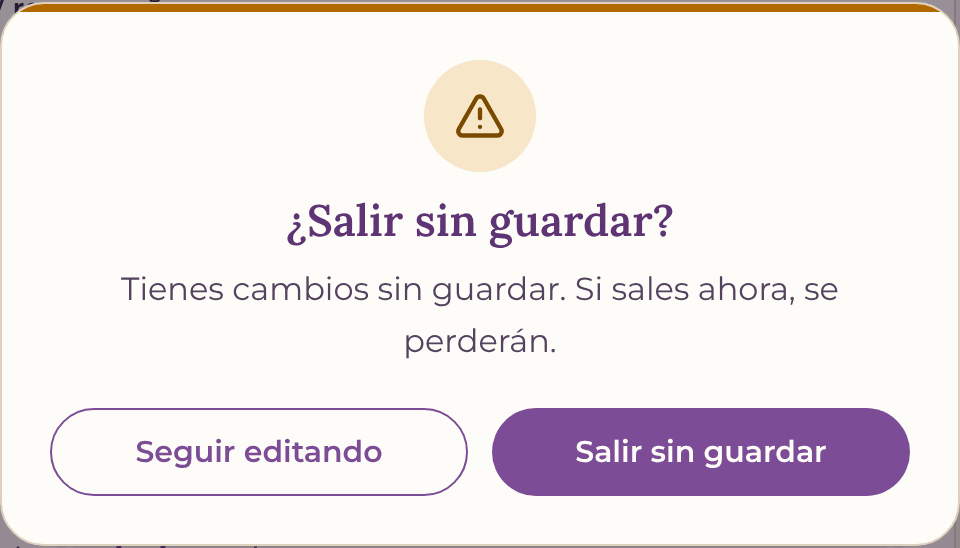
Aviso de cambios sin guardar.
3.5 Campos obligatorios y avisos
Los campos con asterisco (*) son obligatorios.
Si falta algo o hay un error, el campo se marca y aparece un mensaje justo debajo explicando qué corregir.
Algunos campos tienen un contador (por ejemplo «120 / 400») que indica cuántos caracteres llevas y cuál es el máximo.
En los editores de notas, un aviso amarillo te dice qué falta para poder publicar:
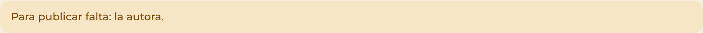
Aviso de lo que falta para publicar.
3.6 Escribir textos largos
Los cuadros de texto grandes no tienen botones de formato como Word. Para que el texto se vea ordenado en el sitio, usa estas tres reglas sencillas:
Para lograr…
Escribe…
Así se ve en el sitio
Un párrafo nuevo
Deja una línea en blanco entre párrafos (presiona Enter dos veces).
Párrafos separados.
Un subtítulo
Empieza la línea con ## y un espacio. ## Busca apoyo
Un título intermedio en morado.
Una lista con puntos
Empieza cada línea con un guion y un espacio. - Silencia cuentas
• Silencia cuentas
Los subtítulos y las listas funcionan en los artículos de Querer encajar. En el resto de las secciones, separa los párrafos con una línea en blanco.
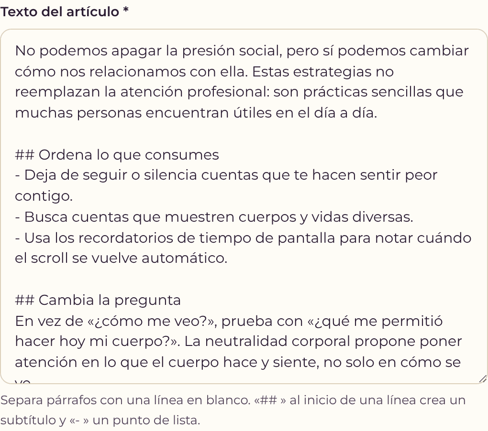
Un texto con subtítulos (##) y listas (-) dentro del panel.
Si escribes en Word o Google Docs, puedes copiar y pegar el texto en el panel. Revisa después que los párrafos queden separados por una línea en blanco.
3.7 Elegir o subir una imagen
Donde se puede poner una imagen (portada de una nota, foto de una integrante, logo…) verás un recuadro con el botón Elegir imagen.
Haz clic en Elegir imagen. Se abre la biblioteca con las imágenes que ya subió el equipo.
Si la imagen ya está, haz clic sobre ella y listo.
Si es nueva, haz clic en Subir imagen, búscala en tu computador o celular y ábrela. Se agrega a la biblioteca y queda elegida.
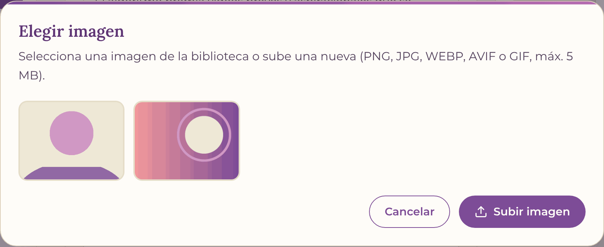
La biblioteca de imágenes al elegir una portada.
Una vez elegida, verás una vista previa. Puedes reemplazarla con Cambiar imagen o sacarla con Quitar.
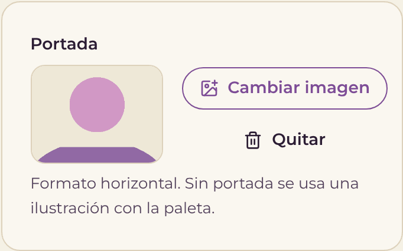
Imagen elegida, con las opciones Cambiar imagen y Quitar.
Formatos y tamaño
Se aceptan fotos e ilustraciones en JPG, PNG, WEBP, AVIF o GIF de hasta 5 MB. Si una foto pesa más, puedes achicarla con la opción «Exportar» o «Reducir tamaño» de tu celular o editor de fotos. No se pueden subir audios ni videos (ver capítulo 8).
Usa solo imágenes propias, con permiso o de bancos gratuitos (por ejemplo Unsplash o Pexels). Evita fotos que muestren cuerpos como «antes y después» o que refuercen cánones de belleza.
3.8 Cómo escribir una referencia
Las notas de Anatomía de un Trend y los artículos de Querer encajar llevan referencias: los libros, estudios, informes o especialistas que respaldan lo que se afirma.
En la sección Referencias y fuentes, haz clic en + Agregar referencia.
En Cita escribe la referencia completa. Se sugiere el formato APA: Apellido, inicial del nombre. (año). Título. Revista o editorial, número, páginas.
Si la fuente está en internet, pega su dirección en Enlace (opcional).
Repite por cada fuente. Para quitar una, usa el ícono del basurero a su derecha.
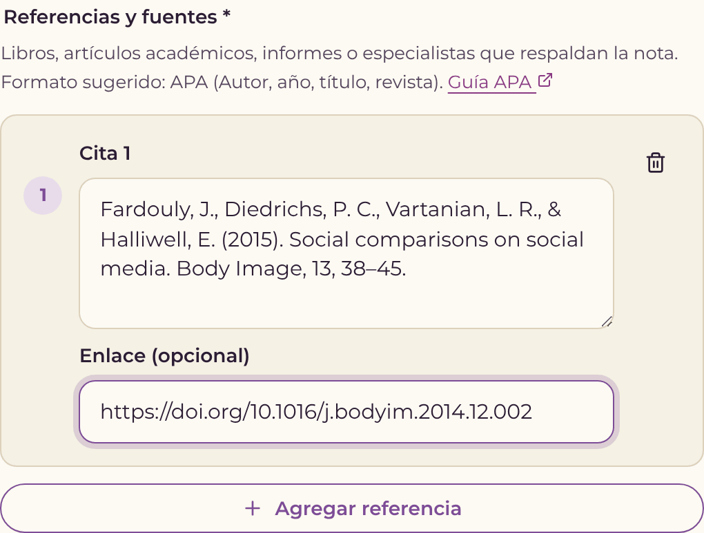
Una referencia con su cita y su enlace.
Ejemplo de cita en formato APA
Fardouly, J., Diedrichs, P. C., Vartanian, L. R., & Halliwell, E. (2015). Social comparisons on social media: The impact of Facebook on young women's body image concerns and mood. Body Image, 13, 38–45.
Si la referencia es una entrevista a una especialista, escríbela así: Nombre Apellido, psicóloga clínica (entrevista personal, octubre de 2026).
Capítulo 4
Anatomía de un Trend
Notas breves que desglosan tendencias virales de TikTok e Instagram. Cada nota tiene siempre la misma estructura en cuatro partes, una autora visible y referencias que la respaldan.
4.1 Ver las notas
En el menú, haz clic en Anatomía de un Trend. Verás todas las notas con su plataforma, su estado y la fecha de su último cambio.
Filtra con los botones Todas, Publicadas o Borradores, o busca por palabra en el cuadro Buscar….
Bajo cada título aparece la autora. Si dice Sin autora asignada, revisa la sección 4.5.
A la derecha de cada nota están los íconos para ver en el sitio (ojo), editar (lápiz) y eliminar (basurero).
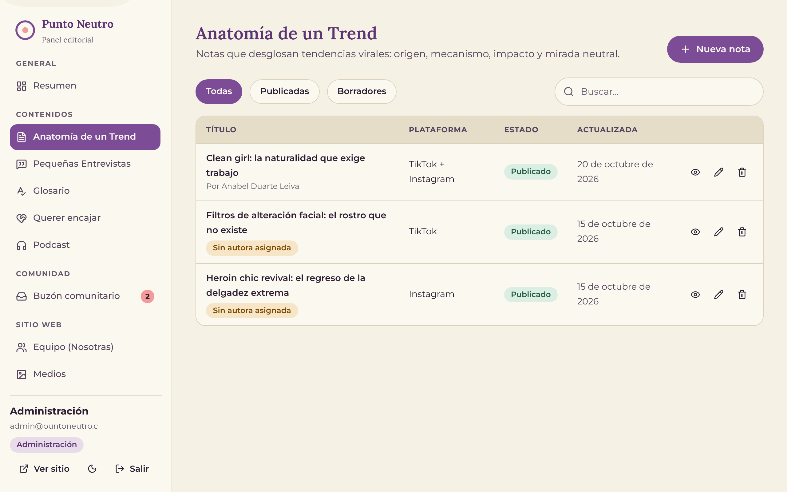
La lista de notas.
4.2 Escribir una nota nueva, paso a paso
Haz clic en + Nueva nota. Se abre el editor vacío.
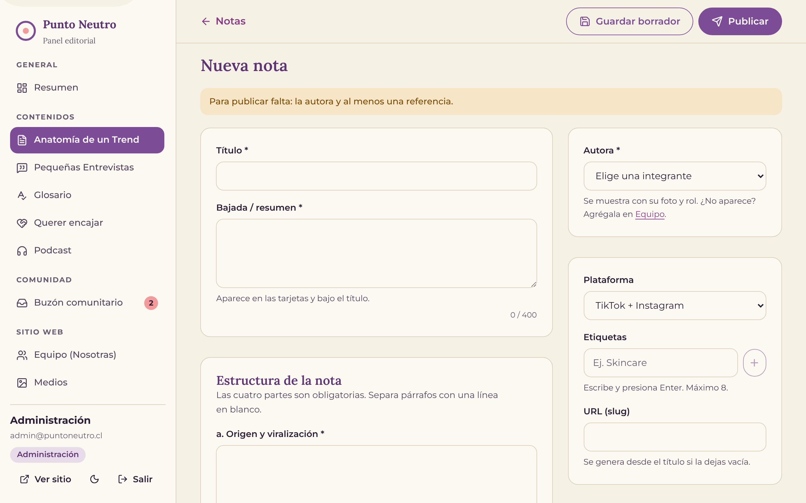
El editor de una nota nueva.
Escribe el Título y la Bajada / resumen: una o dos frases que invitan a leer. La bajada aparece en las tarjetas del sitio y bajo el título.
Completa las cuatro partes de la nota. Bajo cada una hay una pista de lo que se espera:
a. Origen y viralización: dónde y cómo nació la tendencia y cómo se masificó.
b. Mecanismo algorítmico y de comparación: por qué las redes la empujan y cómo instala la comparación.
c. Impacto psicológico y autoobjetivación: qué efectos tiene, con apoyo de fuentes y especialistas.
d. Mirada desde la neutralidad corporal: una forma más amable y funcional de mirar el tema.
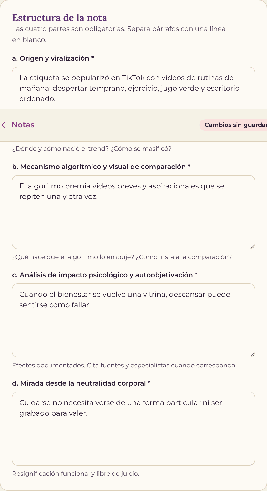
Las cuatro partes de la nota.
En Situación cotidiana escribe un ejemplo breve y reconocible que aterrice el tema (por ejemplo, una escena del colegio, de un grupo de WhatsApp o de una once familiar). En el sitio aparece destacado antes de la nota.
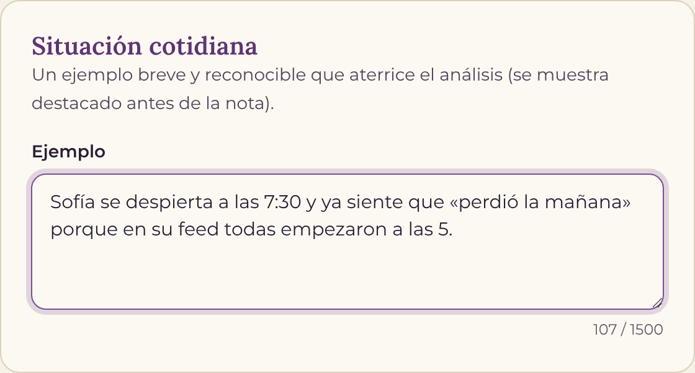
La situación cotidiana.
Agrega las referencias (ver sección 3.8). Para publicar se necesita al menos una.
En la columna derecha, elige la Autora. Aparecen las integrantes del equipo; en el sitio se mostrarán su foto, su nombre y su rol. Si la persona no aparece, agrégala primero en Equipo (Nosotras) (capítulo 9).
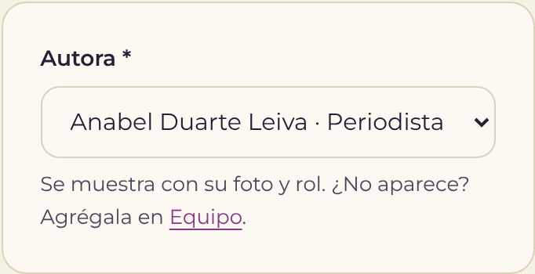
Elegir la autora.
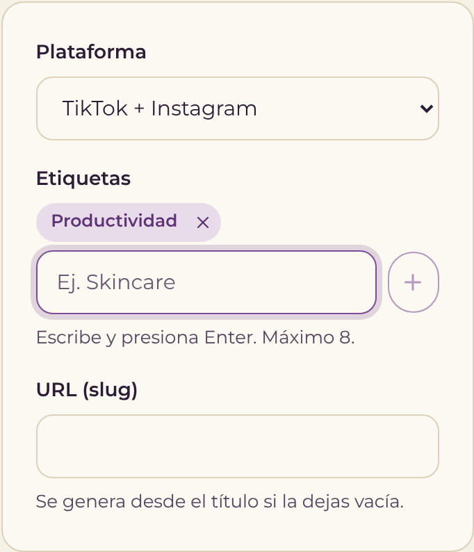
Plataforma, etiquetas y dirección web.
Elige la Plataforma (TikTok, Instagram o ambas) y agrega Etiquetas: escribe una palabra y presiona Enter. Puedes poner hasta 8.
El campo URL (slug) es la dirección web de la nota. Puedes dejarlo vacío: se crea solo a partir del título.
Elige una Portada (ver sección 3.7). Si no pones una, el sitio usa una ilustración con los colores de Punto Neutro.
Si el equipo grabó un video corto sobre el tema, pega su enlace en Cápsula en redes. En la nota aparecerá el botón «Mira la cápsula en TikTok».
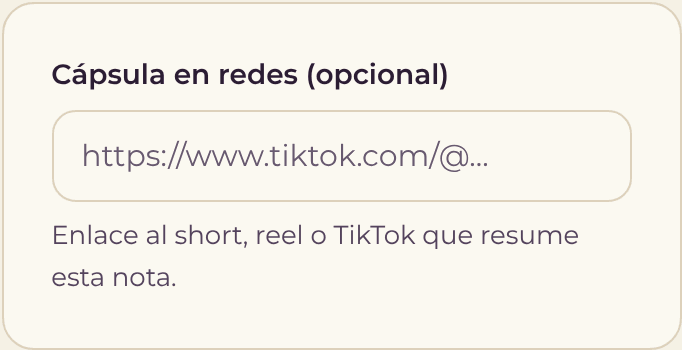
Enlace a la cápsula en redes sociales.
Haz clic en Guardar borrador para guardar sin publicar. Puedes volver a la nota cuando quieras.
4.3 Publicar una nota
Revisa que la nota tenga autora y al menos una referencia. Si falta algo, el aviso amarillo bajo el título te lo dirá.
Haz clic en Publicar.
Confirma con Publicar en la pregunta de seguridad. La nota queda visible en el sitio de inmediato.
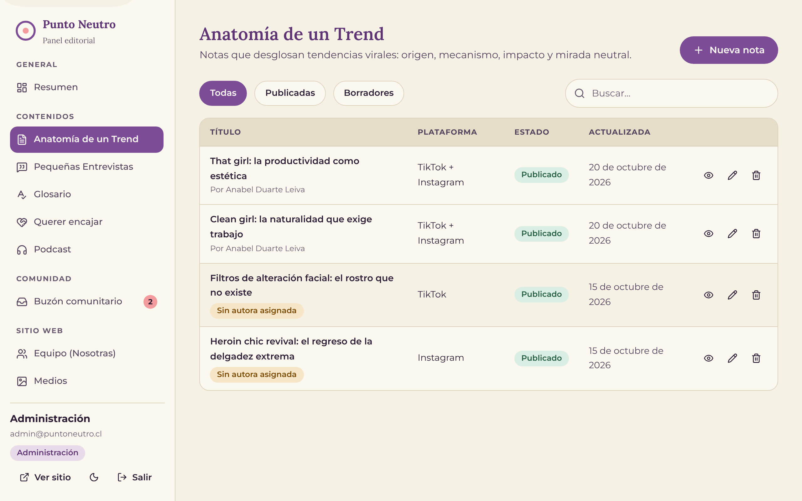
La nota publicada aparece en la lista con la etiqueta verde «Publicado».
4.4 Corregir, despublicar o eliminar
Corregir una nota publicada: ábrela con el lápiz, haz los cambios y presiona Guardar. Los cambios se ven al instante en el sitio.
Despublicar: presiona Despublicar en la barra superior. La nota vuelve a borrador y deja de verse en el sitio, pero no se borra.
Eliminar: en la lista, haz clic en el basurero y confirma con Eliminar nota. Esto no se puede deshacer.
Si dudas entre despublicar o eliminar, despublica: siempre podrás volver a publicarla.
4.5 Notas antiguas sin autora
La autora y las referencias son obligatorias desde esta versión. Las notas publicadas antes de este cambio siguen visibles, pero el Resumen las muestra en el recuadro Notas publicadas sin autora. Para completarlas:
Haz clic en el nombre de la nota en el Resumen, o ábrela desde la lista.
Elige la Autora y revisa que tenga referencias.
Presiona Guardar.
Capítulo 5
Querer encajar
Artículos sobre salud mental, los prejuicios que genera nuestra propia mente y estrategias para manejar la presión social por encajar.
5.1 Ver y crear artículos
En el menú, haz clic en Querer encajar. Verás la lista de artículos con su tema y estado. Para escribir uno nuevo, presiona + Nuevo artículo; para editar uno, haz clic en su título.
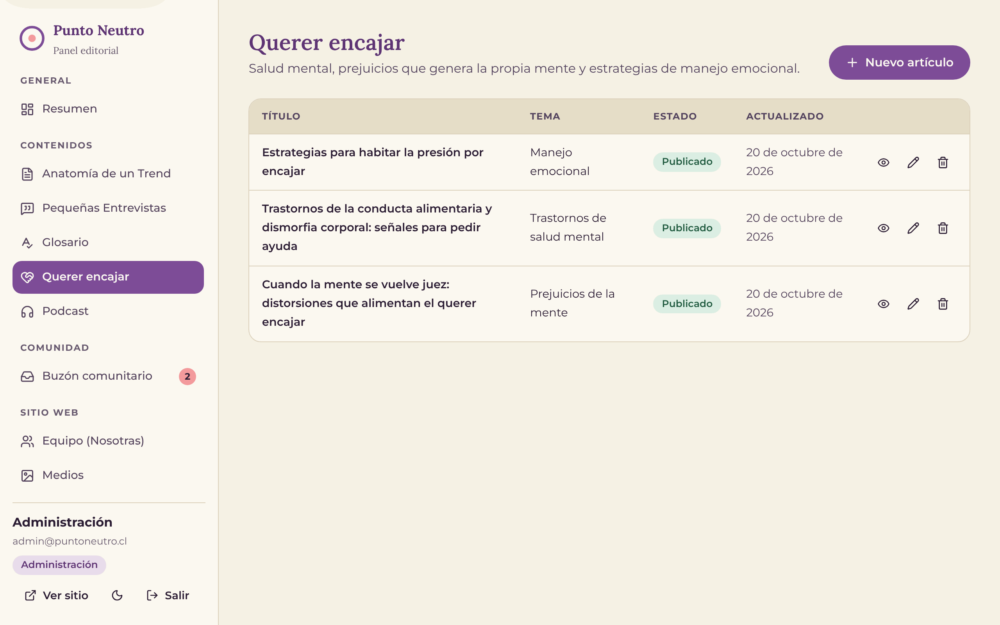
La lista de artículos de Querer encajar.
5.2 Las partes de un artículo
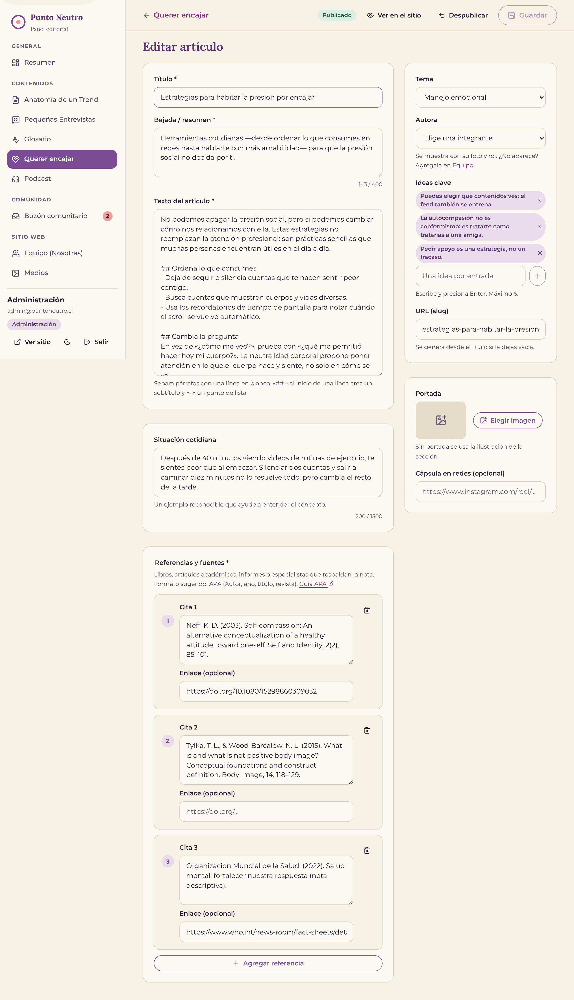
El editor de un artículo.
Campo
Qué escribir
Título y Bajada
Igual que en las notas: un título claro y una o dos frases de presentación.
Texto del artículo
El contenido completo. Usa ## para subtítulos y - para listas (ver sección 3.6).
Situación cotidiana
Un ejemplo reconocible que ayude a entender el concepto.
Referencias y fuentes
Obligatorias para publicar (ver sección 3.8).
Tema
Trastornos de salud mental, Prejuicios de la mente o Manejo emocional. Sirve para que las visitas filtren los artículos.
Autora
Opcional en esta sección. Si la eliges, se muestra su perfil.
Ideas clave
De 1 a 6 frases cortas con lo más importante. Escribe cada idea y presiona Enter. En el sitio aparecen en un recuadro lavanda.
Portada y Cápsula en redes
Igual que en las notas.
Para guardar, publicar, despublicar o eliminar, sigue los mismos pasos del capítulo 4.
Antes de publicar un artículo de salud mental
Usa un lenguaje cuidadoso y sin culpas. Habla de «una persona con un trastorno», no de «una anoréxica».
No des consejos médicos o psicológicos individuales; invita a consultar a profesionales.
No describas métodos de autolesión ni conductas de riesgo en detalle.
Respalda lo que afirmas con fuentes confiables (OMS, Minsal, estudios académicos o especialistas).
El sitio muestra automáticamente, en cada artículo, un recuadro con líneas de ayuda: *4141 (prevención del suicidio), Salud Responde 600 360 7777 y 131 (urgencias).
Capítulo 6
Pequeñas Entrevistas
Conversaciones breves en un formato fijo de tres preguntas. Cada entrevista pertenece a una de tres secciones: Expertas, Influencers o Personas comunes.
6.1 Las tres categorías
La categoría decide en qué sección del sitio aparece la entrevista:
Expertas: especialistas en psicología, salud o comunicación.
Influencers: creadoras de contenido que viven la exposición en redes.
Personas comunes: estudiantes, trabajadoras, madres, hijas; experiencias cotidianas lejos de las cámaras.
En la lista del panel, los botones Todas, Expertas, Influencers y Personas comunes muestran solo las entrevistas de esa categoría. El número indica cuántas hay.
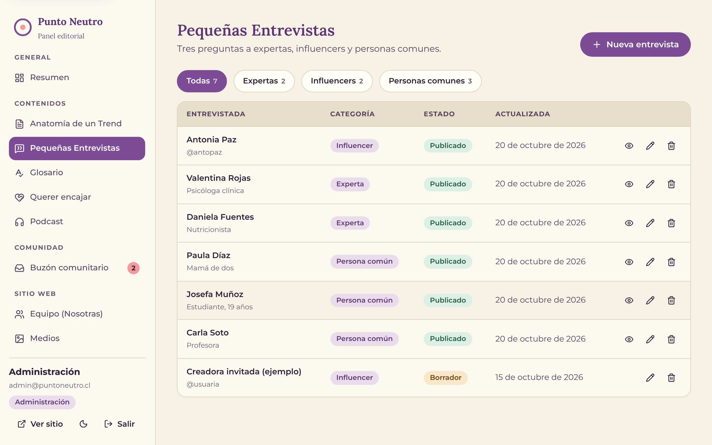
La lista de entrevistas, con su categoría y los botones para filtrar.
6.2 Crear o editar una entrevista
En el menú, haz clic en Pequeñas Entrevistas y luego en + Nueva entrevista (o en el lápiz de una entrevista para editarla).
Lo primero es elegir la Categoría: haz clic en una de las tres tarjetas. Es obligatoria; sin ella la entrevista no se puede guardar.
Al elegir la categoría, las tres preguntas se completan con preguntas sugeridas para ese tipo de persona. Puedes cambiarlas libremente: si ya escribiste una pregunta propia, el panel no la reemplaza.
Escribe una Introducción breve para dar contexto.
Completa las tres respuestas.
En la columna derecha escribe el Nombre de la persona entrevistada, su Usuario en redes (o su profesión, por ejemplo «Psicóloga clínica») y una Descripción breve.
Si tienes su autorización, agrega una Foto.
Presiona Guardar borrador y, cuando esté lista, Publicar.
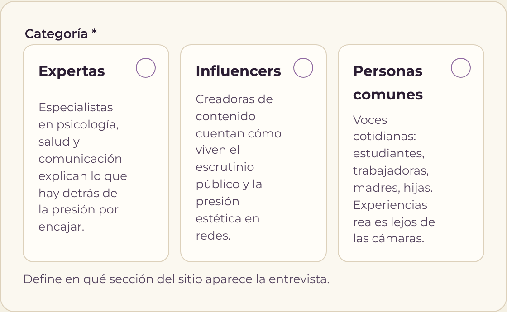
Las tres tarjetas para elegir la categoría. La marcada aparece en color.
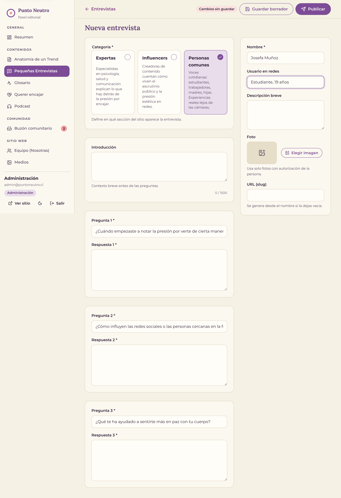
El editor de una entrevista, con la categoría elegida y las preguntas sugeridas.
¿Te equivocaste de categoría? Ábrela, haz clic en la categoría correcta y guarda. La entrevista se mueve sola a la otra sección del sitio.
Antes de publicar, comparte la versión final con la persona entrevistada y usa su foto solo con su permiso.
6.3 Cómo se ve en el sitio
En la página de entrevistas, las visitas ven pestañas con las tres secciones. En Todas aparecen agrupadas por sección, con las dos más recientes de cada una; al elegir una pestaña se ven todas las de esa categoría. Cada entrevista muestra también su categoría.
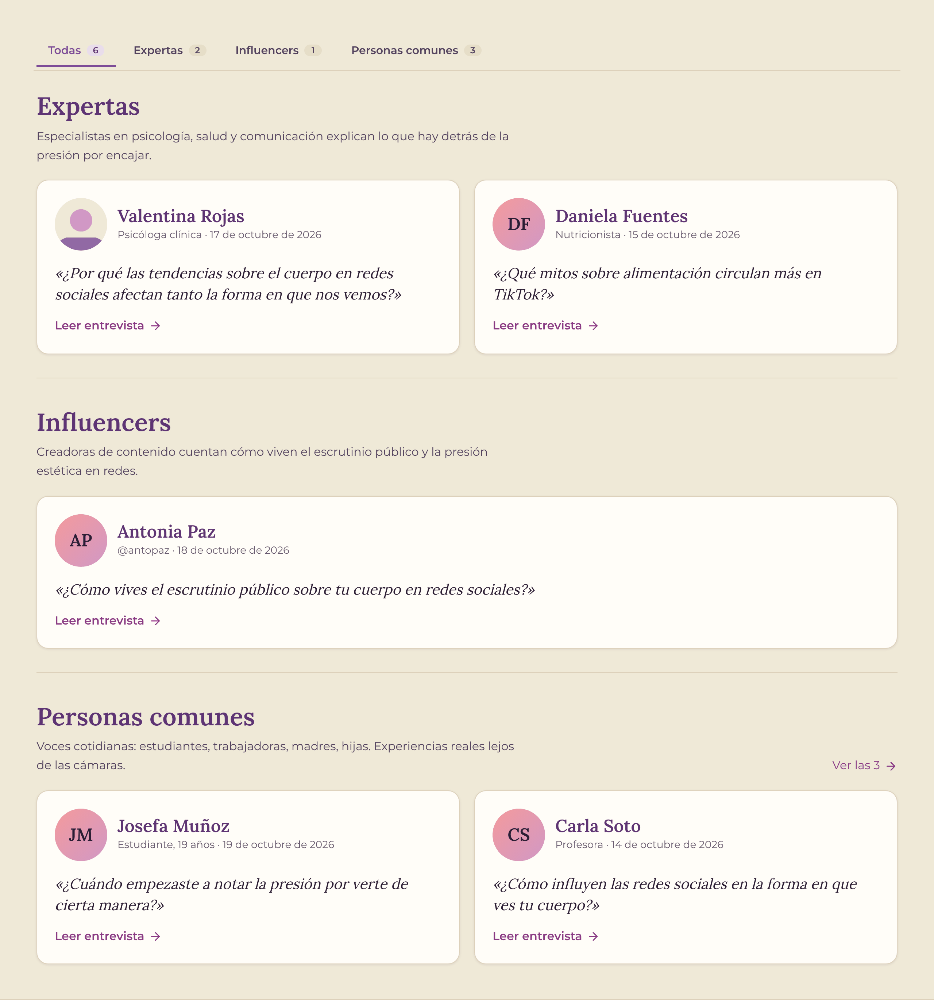
Las entrevistas en el sitio, separadas por sección.Capítulo 7
Glosario
El glosario de palabras normalizadas: términos de uso común que refuerzan prejuicios sobre los cuerpos, con una forma más neutra de decirlos.
7.1 Agregar o editar un término
En el menú, haz clic en Glosario.
Presiona + Nuevo para agregar un término, o el lápiz de un término existente para editarlo. Se abre una ventana.
Completa el Término, la Definición común, el Sesgo / impacto inconsciente y la Reformulación neutra.
Si quieres, agrega un Ejemplo cotidiano: cómo suena la frase en la vida diaria. En el sitio aparece como una burbuja de conversación.
El campo Orden define la posición: los números menores aparecen primero.
Deja activado Visible en el sitio para que se publique, o desactívalo para ocultarlo sin borrarlo.
Presiona Guardar.
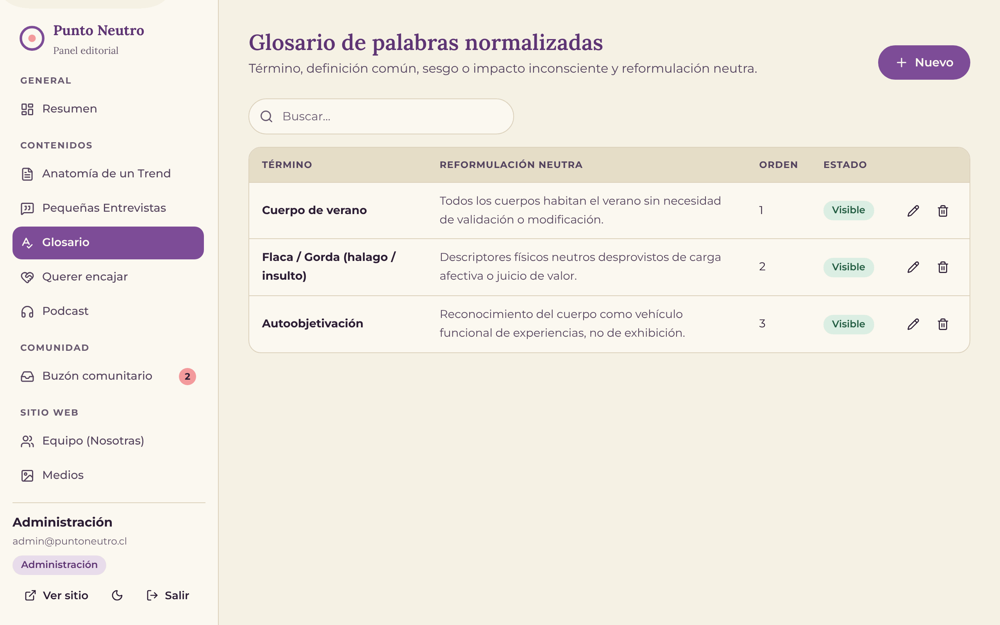
La lista de términos del glosario.
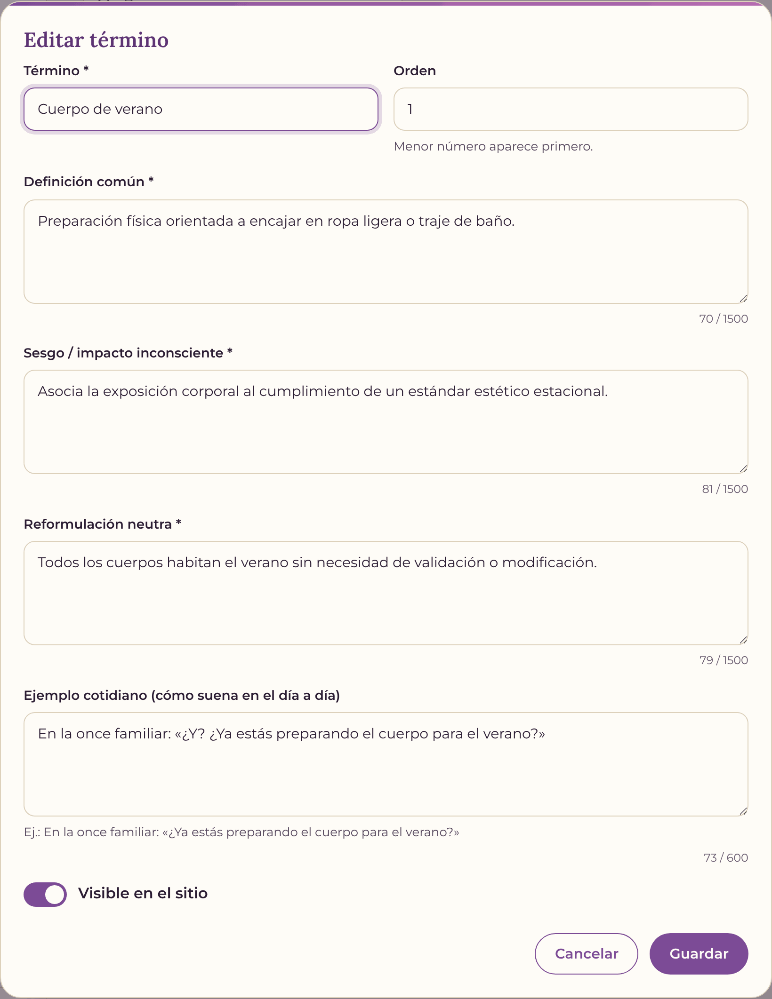
La ventana para editar un término.Capítulo 8
Podcast «A Pausar el Filtro»
Los episodios se suben a SoundCloud. En el panel se arma la tarjeta de cada episodio: carátula, título, resumen, palabras clave y el enlace directo a SoundCloud.
8.1 Copiar el enlace desde SoundCloud
Entra a SoundCloud con la cuenta del podcast y abre el episodio.
Haz clic en Compartir (Share) y luego en Copiar enlace (Copy link). El enlace empieza con https://soundcloud.com/… o https://on.soundcloud.com/….
El panel no permite subir el audio directamente: los archivos de audio son muy pesados para el sitio. SoundCloud los guarda, los reproduce y además entrega estadísticas de escucha.
8.2 Agregar o editar un episodio
En el menú, haz clic en Podcast y luego en + Nuevo (o en el lápiz de un episodio para editarlo).
Escribe el Título del episodio.
Pega el enlace en Enlace de SoundCloud.
Escribe un Resumen de dos o tres frases que invite a escuchar. Es el texto que aparece en la tarjeta.
Agrega las Palabras clave: escribe una (por ejemplo «Salud mental») y presiona Enter. Puedes poner hasta 8. Para quitar una, haz clic en su ×.
Elige una Carátula desde la biblioteca de medios (ideal: cuadrada, de al menos 600 × 600 píxeles). Si no eliges una, la tarjeta usa la ilustración del podcast.
Si quieres, completa el N° de episodio, la Duración en minutos y las Invitadas e invitados.
Activa Publicado cuando quieras que aparezca en el sitio.
Revisa la Vista previa al final de la ventana: muestra la tarjeta tal como se verá, y cambia mientras escribes.
Presiona Guardar.
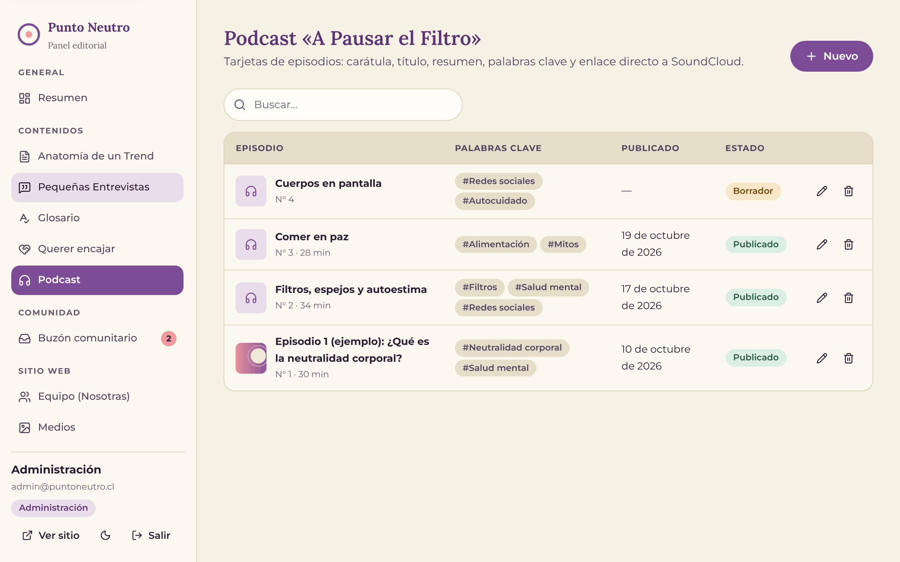
La lista de episodios, con su carátula y sus palabras clave.
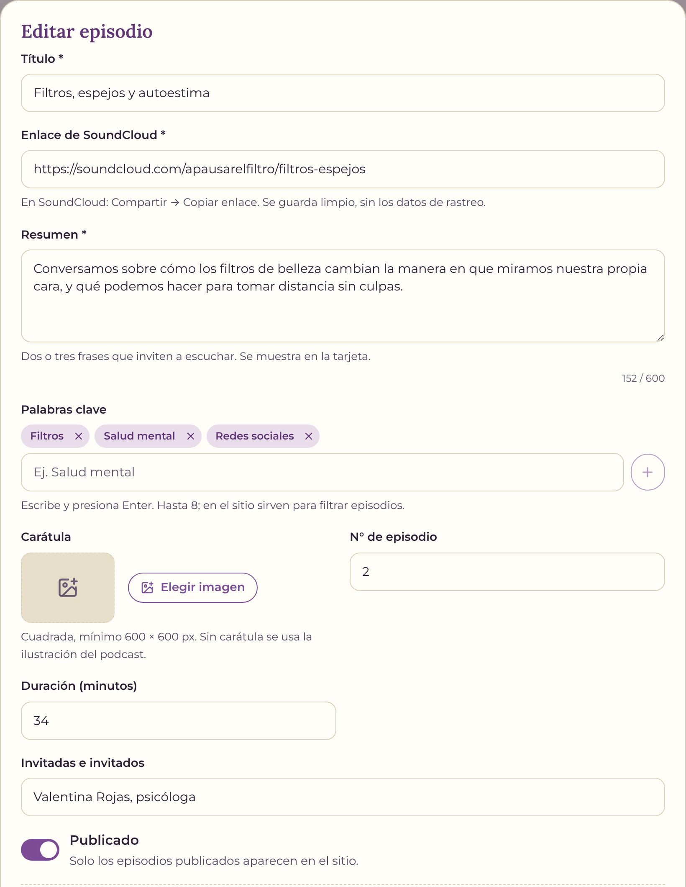
La ventana para editar un episodio.
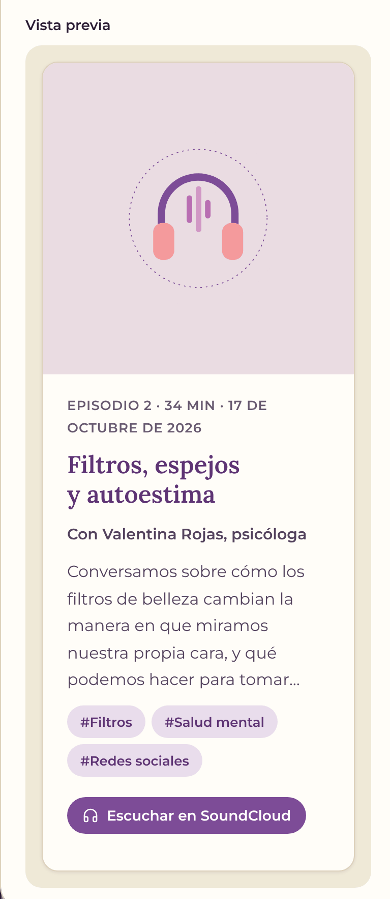
La vista previa de la tarjeta, al final de la misma ventana.
8.3 Si el enlace no es de SoundCloud
El panel revisa el enlace antes de guardar. Si no es de SoundCloud (por ejemplo, uno de YouTube o de Instagram), el campo se marca en rojo con un aviso, y el episodio no se guarda hasta corregirlo.
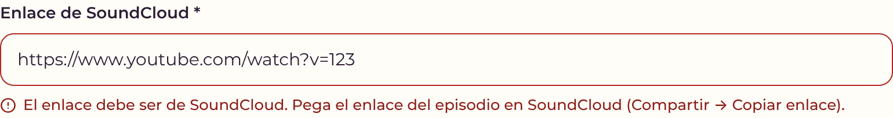
Aviso cuando el enlace no es de SoundCloud.
No hace falta limpiar el enlace: si SoundCloud agrega datos extra al final (como ?si=… o ?utm_source=…), el panel los quita solo al guardar.
8.4 Cómo se ve en el sitio
La página del podcast muestra una tarjeta por episodio. Las visitas pueden abrir el episodio en SoundCloud o presionar Escuchar aquí para oírlo sin salir del sitio. Al hacer clic en una palabra clave, se muestran solo los episodios sobre ese tema.
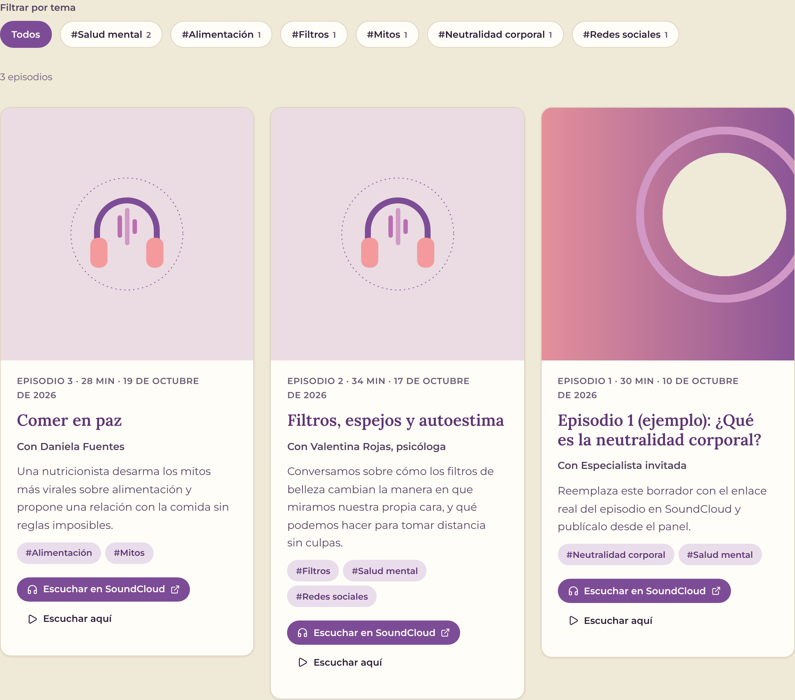
Las tarjetas de episodios en el sitio, con el filtro por tema.
Usa siempre la misma forma para una palabra clave («Salud mental», no a veces «Salud Mental» y otras «salud-mental»), así el filtro agrupa bien los episodios. El panel ya trata igual las mayúsculas y las tildes.
Si un episodio no se escucha en el sitio, revisa en SoundCloud que esté configurado como público.
Capítulo 9
Equipo (Nosotras)
Las integrantes que aparecen en la sección Nosotras del sitio. Estos perfiles también se usan para mostrar la autora de cada nota.
9.1 Agregar o editar una integrante
En el menú, haz clic en Equipo (Nosotras).
Presiona + Nuevo o el lápiz de una integrante.
Completa su Nombre y Rol (por ejemplo: «Periodista · Entrevistas y estrategia digital»).
Agrega una Foto (ideal: cuadrada, de frente) y una Biografía breve.
En Responsabilidades, escribe cada tarea y presiona Enter. Para quitar una, haz clic en su ×.
Usa Orden para decidir quién aparece primero y Visible en el sitio para mostrarla u ocultarla.
Presiona Guardar.
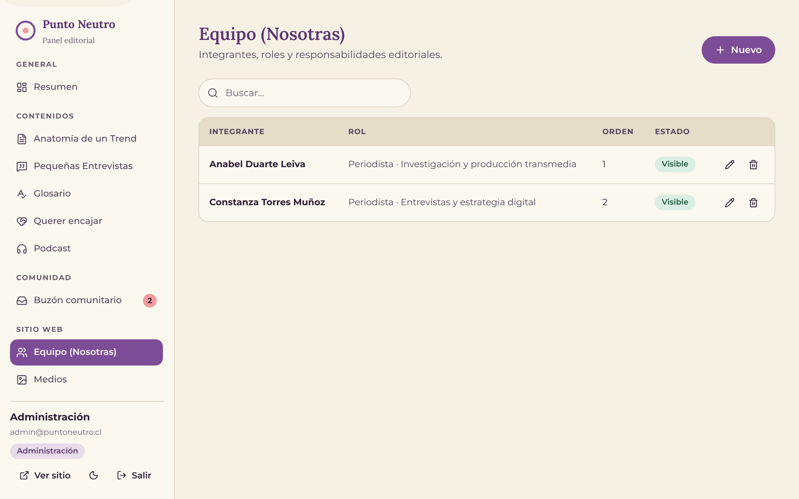
La lista del equipo.
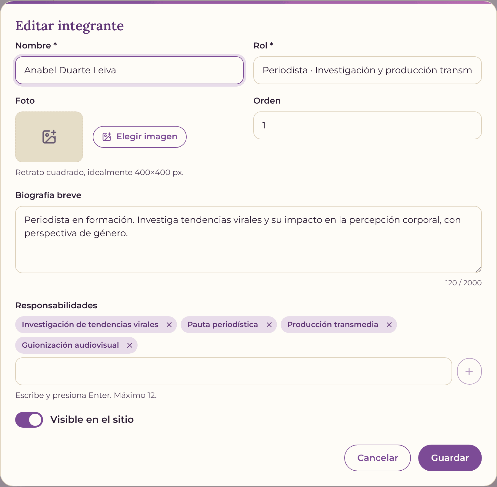
La ventana para editar una integrante.
Una integrante del equipo (lo que se muestra en el sitio) no es lo mismo que una cuenta del panel (para entrar a editar). Las cuentas se crean en Usuarios y roles (capítulo 13).
Capítulo 10
Buzón comunitario
El espacio donde mujeres y adolescentes comparten sus relatos. Aquí el equipo los lee, los cuida y decide —con el consentimiento de cada persona— qué extracto publicar.
10.1 Lo que ve la persona que escribe
En el sitio, el formulario del buzón:
Es anónimo por defecto. Si la persona quiere, puede firmar con un seudónimo y dejar un correo.
Permite elegir un tema. Si elige Otros, debe escribir de qué trata.
Muestra las normas de convivencia, que deben aceptarse para enviar (se editan en Configuración, sección 12.6).
Pregunta si autoriza publicar un extracto editado y pide su consentimiento informado.
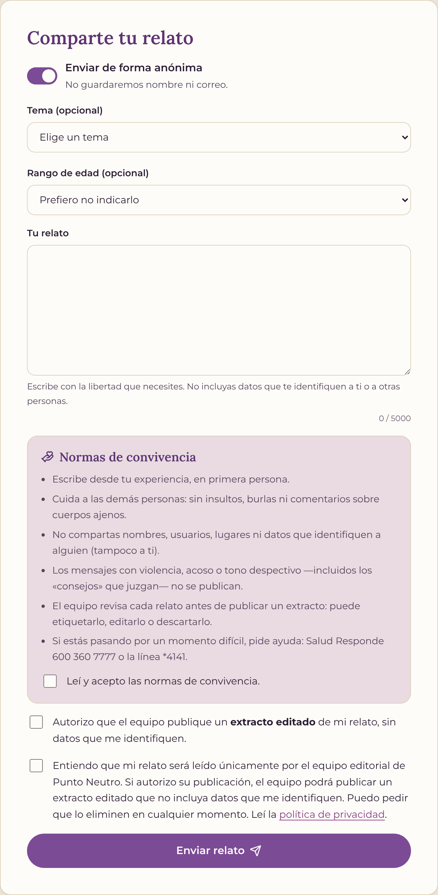
El formulario del buzón en el sitio.
10.2 La bandeja del buzón
En el menú, haz clic en Buzón comunitario. Los relatos se ordenan en cuatro grupos:
Grupo
Significa
Por revisar
Relatos nuevos que nadie ha revisado todavía.
Publicado
Relatos cuyo extracto ya aparece en el sitio.
Archivado
Relatos leídos que no se publicarán (por ejemplo, porque la persona no lo autorizó).
No publicable
Relatos descartados: ofensivos, fuera de tema o que no corresponde publicar.
Cada relato muestra etiquetas: Anónimo o la firma, Autoriza publicar o Solo lectura, el tema y, si corresponde, el aviso del filtro automático.
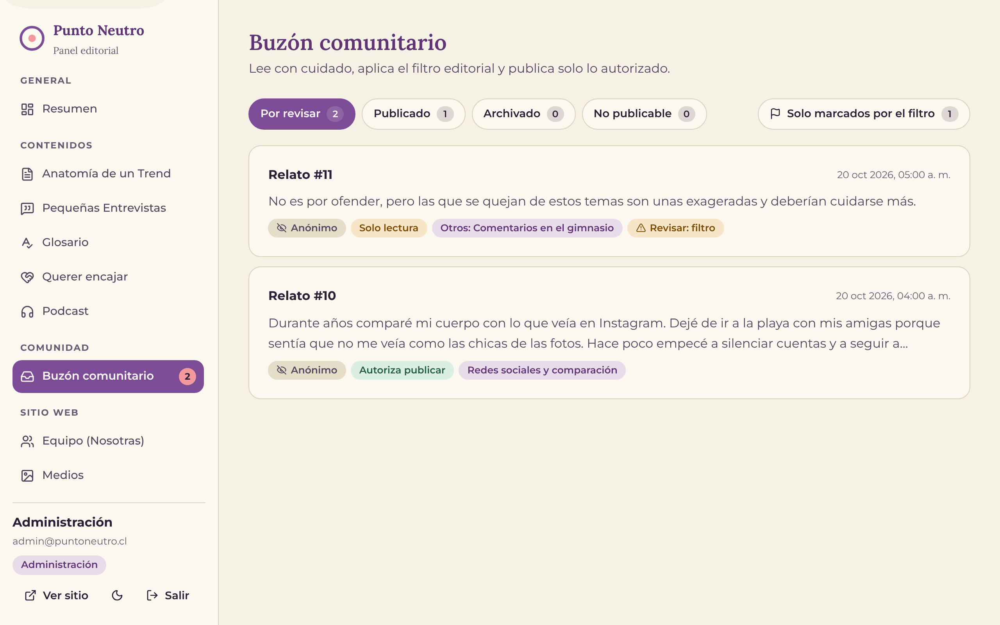
La bandeja del buzón con dos relatos por revisar.
10.3 Revisar un relato y publicar un extracto
Haz clic sobre un relato. Se abre una ventana con el relato original, que solo ve el equipo.
Revisa si dice Autoriza publicar. Si no lo autorizó, solo puedes archivarlo.
En Extracto para publicar, escribe el fragmento que se mostrará en el sitio. Puedes usar el botón Usar el relato como base para editar y luego recortarlo.
Quita cualquier dato que pueda identificar a alguien: nombres, colegios, ciudades, usuarios de redes.
Si quieres, agrega una Nota interna (solo la ve el equipo) y una o más etiquetas.
Presiona Aprobar y publicar y confirma con Publicar extracto.
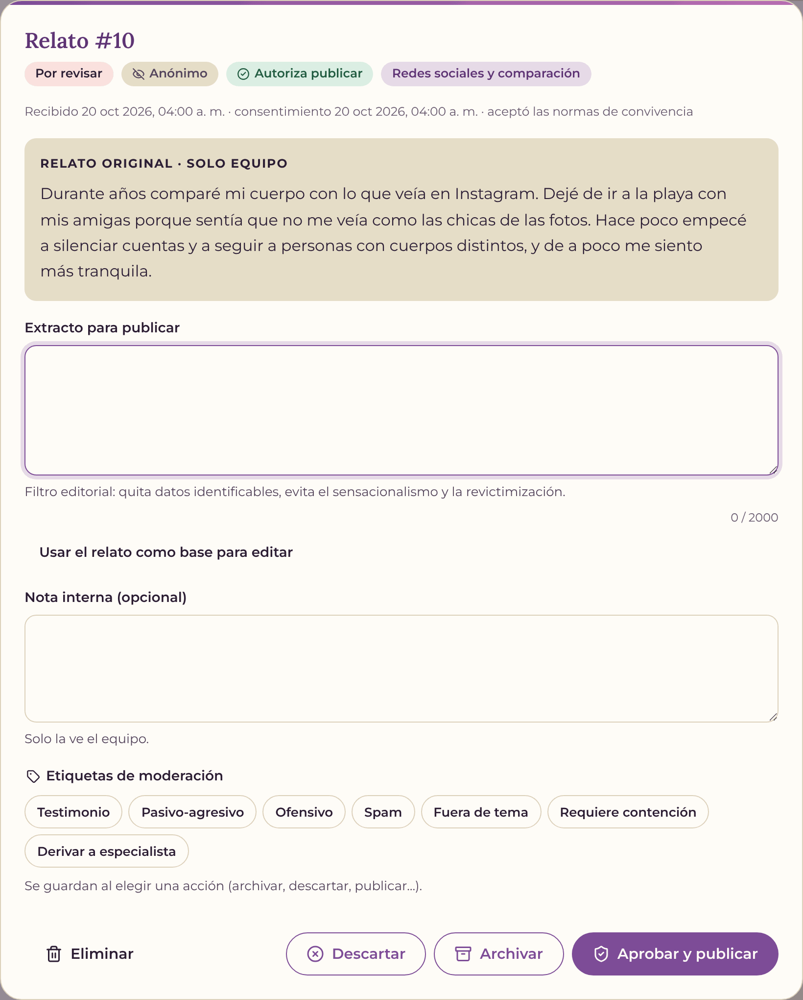
Un relato que autoriza su publicación.
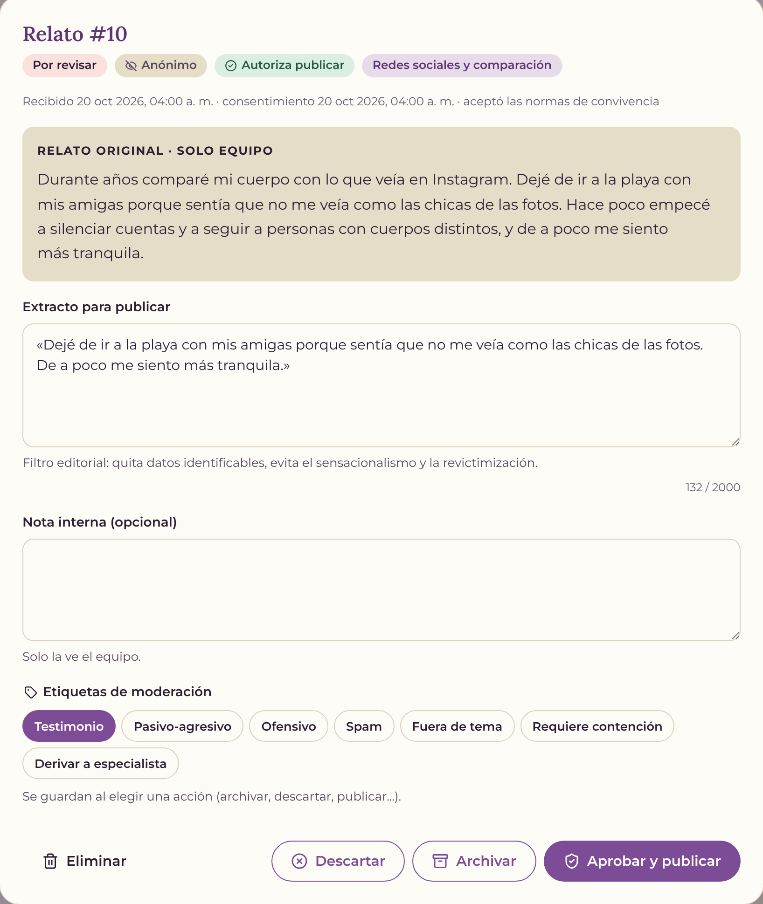
El extracto editado, con la etiqueta «Testimonio» elegida.
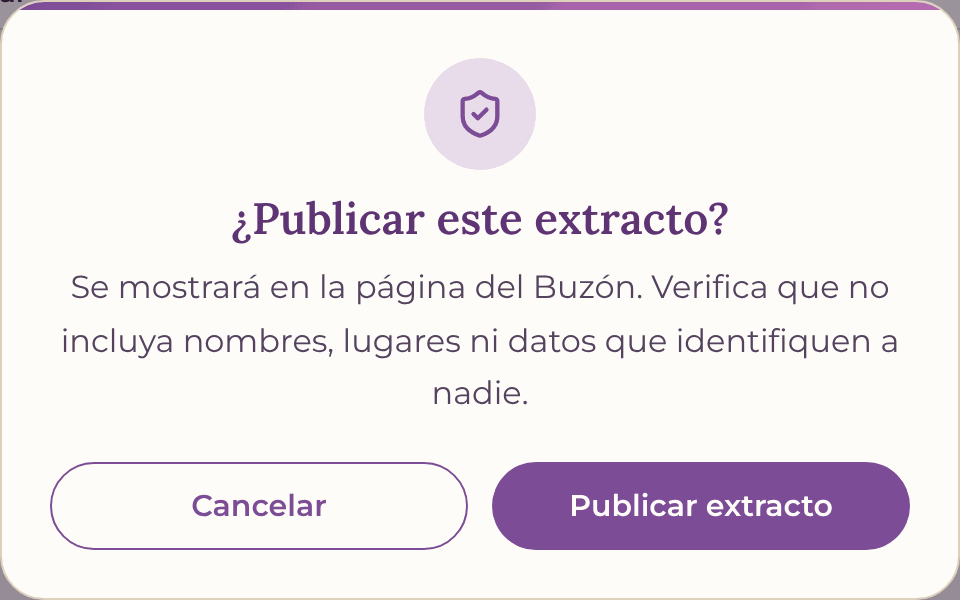
La confirmación recuerda revisar que no haya datos que identifiquen.
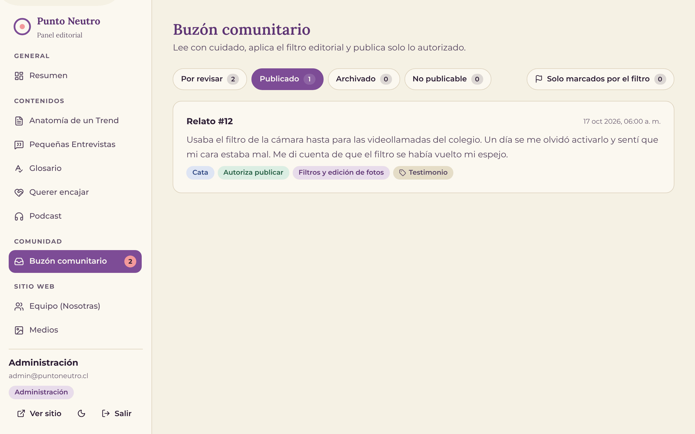
Los relatos publicados.
El filtro editorial
Nunca se publica el relato completo tal como llegó: solo el extracto que escribe el equipo. Al editarlo, evita el sensacionalismo y cualquier detalle que pueda revictimizar a la persona.
10.4 Relatos marcados por el filtro automático
El panel revisa cada relato que llega y marca los que podrían necesitar más atención: insultos, frases pasivo-agresivas («no es por ofender, pero…»), enlaces, mensajes en mayúsculas o señales de que la persona podría estar en riesgo.
El filtro nunca borra ni rechaza un relato: solo avisa. La decisión siempre es del equipo.
Un relato puede estar marcado porque cita algo que le dijeron a la persona (por ejemplo, un insulto que recibió). Lee siempre el contexto.
Para ver solo los marcados, usa el botón Solo marcados por el filtro.
Vista con solo los relatos marcados.
Al abrir un relato marcado, un recuadro amarillo explica el motivo y las expresiones detectadas:
Un relato marcado por tono pasivo-agresivo, con la etiqueta correspondiente elegida.
10.5 Etiquetas, archivar y descartar
Las etiquetas de moderación ayudan al equipo a ordenar los relatos: Testimonio, Pasivo-agresivo, Ofensivo, Spam, Fuera de tema, Requiere contención y Derivar a especialista. Haz clic en una para marcarla (queda en morado) y otra vez para quitarla. Se guardan al elegir cualquiera de estas acciones:
Botón
Qué hace
Aprobar y publicar
Publica el extracto en el sitio (solo si la persona lo autorizó).
Archivar
Lo guarda como leído, sin publicar.
Descartar
Lo pasa a «No publicable». Úsalo para mensajes ofensivos, spam o fuera de tema.
Devolver a revisión
Lo vuelve a «Por revisar», por ejemplo para que otra integrante lo vea.
Eliminar (solo Administración)
Lo borra para siempre. Úsalo solo si la persona pide que borren su relato.
10.6 Si un relato muestra señales de riesgo
Qué hacer
Si el filtro muestra «Posible riesgo: requiere contención» (recuadro rojo), o si al leer notas que la persona podría estar en peligro:
No publiques el relato.
Ponle la etiqueta Requiere contención y avisa al resto del equipo.
Si dejó un correo, considera responderle con calidez, sin juzgar, entregando las líneas de ayuda: *4141 (prevención del suicidio, gratuita y las 24 horas) y Salud Responde 600 360 7777.
Si es anónimo, no hay forma de contactar a la persona: archívalo con una nota interna.
Capítulo 11
Medios (imágenes)
La biblioteca de imágenes del sitio: portadas, fotos del equipo, logo e íconos.
11.1 Subir imágenes
En el menú, haz clic en Medios.
Presiona Subir imágenes y elige una o varias imágenes de tu computador. También puedes arrastrarlas desde una carpeta hasta el recuadro punteado.
Espera el mensaje verde de confirmación.
La biblioteca vacía, con el recuadro para arrastrar imágenes.La biblioteca con dos imágenes.
11.2 Describir, copiar o eliminar una imagen
Bajo cada imagen hay tres íconos:
Lápiz — descripción: escribe en pocas palabras qué muestra la imagen. Esta descripción la leen en voz alta los programas que usan las personas ciegas o con baja visión. Si una imagen dice «Sin descripción», agrégala.
Copiar enlace: copia la dirección de la imagen, por si necesitas compartirla.
Basurero — eliminar: borra la imagen. Si se estaba usando como portada, foto o logo, ese lugar quedará sin imagen.
Escribir la descripción de una imagen.Capítulo 12
Configuración del sitio
Los textos institucionales, el logo, el ícono y el título de la pestaña, las portadas, los datos de contacto y los avisos legales. Solo pueden usarla las cuentas con rol de Administración.
12.1 Cómo funciona esta página
En el menú, haz clic en Configuración del sitio. La página está dividida en secciones; usa el índice de la izquierda para saltar a cada una.
La página de configuración y su índice.
Puedes cambiar varias cosas y guardar todo junto al final con Guardar y publicar (arriba a la derecha). El panel pedirá confirmar, porque los cambios se ven de inmediato en el sitio.
Confirmación antes de publicar los cambios.
12.2 Identidad: nombre, bajada y logo
El Nombre del sitio y la Bajada aparecen en la cabecera y en el pie de página. El Logo reemplaza el círculo con el punto que aparece junto al nombre. Usa una imagen cuadrada, idealmente con fondo transparente (PNG).
La sección Identidad.
12.3 Título de la pestaña, ícono y buscadores
Título de la página: el texto que se ve en la pestaña del navegador y en los resultados de Google. En cada sección se antepone su nombre, por ejemplo «Glosario · Punto Neutro…».
Favicon: el ícono pequeño que aparece en la pestaña del navegador y en los marcadores. Usa una imagen cuadrada y simple, idealmente de 512 × 512 píxeles.
Descripción para buscadores: una o dos frases que Google muestra bajo el título del sitio.
Título, ícono y descripción.
Después de cambiar el ícono, puede que tu navegador siga mostrando el anterior por unos minutos. Recarga la página o ábrela en otra ventana para ver el nuevo.
12.4 Portada del inicio y textos principales
La sección Inicio controla la portada del sitio:
Imagen junto al título: reemplaza la ilustración de círculos que aparece al lado del título principal. Usa una imagen horizontal, de al menos 1200 píxeles de ancho.
Título principal y Texto bajo el título: lo primero que lee una visita.
¿Qué es Punto Neutro?, Objetivo de la página, Misión y Visión.
La sección Inicio, con la imagen junto al título en la parte superior.
12.5 Portadas de cada sección
Cada sección del sitio (Nosotras, Anatomía de un Trend, Entrevistas, Glosario, Querer encajar, Buzón y Podcast) puede tener su propia imagen de portada en la cabecera. Si dejas una vacía, se muestra la ilustración de esa sección.
Las portadas de las secciones.
12.6 Buzón: consentimiento y normas de convivencia
Aquí se editan la presentación del buzón, el texto de consentimiento informado y las Normas de convivencia. Escribe una norma por línea: en el sitio se muestran como una lista que la persona debe aceptar antes de enviar.
La sección Buzón comunitario.
12.7 Querer encajar, Nosotras y Podcast
Cada una de estas secciones tiene su texto de presentación. En Nosotras también se editan la línea editorial y los pilares editoriales (uno por entrada), y en Podcast el nombre y el enlace al perfil de SoundCloud.
La presentación de Querer encajar.
12.8 Contacto y redes sociales
El correo, el teléfono, el WhatsApp y los enlaces a Instagram, Facebook y TikTok aparecen en el pie de página y en el banner de cierre de la portada. Los campos vacíos no se muestran en el sitio. Copia el enlace completo de cada red social (por ejemplo, https://www.instagram.com/puntoneutro).
La sección Contacto y redes.
12.9 Créditos y política de privacidad
Los Créditos aparecen al final de cada página. La Política de privacidad se muestra en su propia página. Las líneas que empiezan con un número y un punto (por ejemplo «1. Qué datos recibimos») se muestran como subtítulos.
Créditos y política de privacidad.Capítulo 13
Usuarios y roles
Las cuentas de las personas que pueden entrar al panel. Solo disponible para el rol de Administración.
13.1 Crear una cuenta
En el menú, haz clic en Usuarios y roles y luego en + Nueva cuenta.
Escribe el Nombre y el Correo de la persona.
Elige su Rol: Editora (contenidos, equipo, medios y buzón) o Administración (todo el panel).
Escribe una Contraseña inicial de al menos 10 caracteres.
Presiona Guardar y comparte el correo y la contraseña con la persona por un medio privado. Pídele que la cambie al entrar (sección 2.4).
La lista de cuentas.La ventana para crear una cuenta.
13.2 Cambiar el rol, pausar o eliminar una cuenta
Cambiar el rol o restablecer la contraseña: haz clic en el lápiz de la cuenta, haz el cambio y guarda.
Pausar el acceso: en la misma ventana, desactiva Cuenta activa. La persona no podrá entrar, pero su cuenta y sus contenidos se conservan.
Eliminar: usa el basurero. Los contenidos que creó se conservan.
Por seguridad, nadie puede quitarse a sí misma el rol de Administración ni desactivar o eliminar su propia cuenta. Así el panel nunca queda sin una persona que lo administre.
Capítulo 14
Historial de cambios
Un registro de los últimos 200 cambios hechos en el panel: quién hizo qué y cuándo. Solo disponible para el rol de Administración.
Úsalo para saber quién publicó o editó un contenido, o para entender un cambio inesperado en el sitio.
El historial de cambios.Capítulo 15
Preguntas frecuentes
Respuestas rápidas a las dudas y problemas más comunes.
Olvidé mi contraseña.
Pídele a una persona con rol de Administración que te asigne una nueva desde Usuarios y roles. Luego cámbiala por una propia en Mi cuenta.
El panel me sacó y me pide ingresar otra vez.
Por seguridad, la sesión dura unas horas. Si al guardar aparece el mensaje «Tu sesión expiró», copia tu texto antes de recargar (selecciónalo y usa Copiar), vuelve a ingresar y pégalo de nuevo.
Publiqué algo y no lo veo en el sitio.
Revisa en la lista que tenga la etiqueta verde Publicado (o el interruptor Visible en el sitio / Publicado activado). Después recarga el sitio. En el glosario, el equipo y el podcast, el contenido debe estar marcado como visible o publicado.
No me deja publicar una nota.
Lee el aviso amarillo bajo el título: casi siempre falta la autora o una referencia. En las notas de Anatomía de un Trend ambas son obligatorias.
Mi autora no aparece en la lista.
Primero agrégala en Equipo (Nosotras). Luego vuelve a la nota: ya aparecerá en la lista.
No puedo subir una imagen.
Revisa que sea JPG, PNG, WEBP, AVIF o GIF y que pese menos de 5 MB. Las fotos del celular a veces pesan más: redúcelas antes de subirlas.
¿Puedo subir un audio o un video?
No. Los episodios del podcast se suben a SoundCloud y se pega su enlace (capítulo 8). Los videos cortos se publican en TikTok, Instagram o YouTube y se enlazan en el campo Cápsula en redes de cada nota.
Borré algo por error.
Las eliminaciones no se pueden deshacer desde el panel. Si fue un contenido importante, contacta a quien administra el sitio técnicamente lo antes posible.
Un relato del buzón tiene un insulto. ¿Lo descarto?
Primero lee el contexto: muchas veces la persona está contando un insulto que recibió. Si es un testimonio, puede publicarse un extracto cuidadoso. Si el mensaje ataca a otras personas, descártalo con la etiqueta «Ofensivo».
Alguien pide que borremos su relato.
Una persona con rol de Administración puede buscarlo por la fecha aproximada y el texto, abrirlo y usar Eliminar.
Veo todo muy oscuro (o muy claro).
Usa el botón de la luna o el sol, al final del menú, para cambiar entre modo claro y oscuro.
Capítulo 16
Palabras que usamos en el panel
Un pequeño diccionario de los términos que aparecen en el panel y en este manual.
Borrador
Contenido guardado que solo ve el equipo. No aparece en el sitio.
Publicar / Despublicar
Hacer visible un contenido en el sitio / volver a ocultarlo sin borrarlo.
Bajada
Frase breve bajo el título que resume la nota e invita a leerla.
Etiquetas
Palabras clave que agrupan contenidos. En el buzón, marcas internas del equipo para ordenar relatos.
URL o slug
La dirección web de una nota (por ejemplo, …/anatomia-de-un-trend/clean-girl). Se crea sola a partir del título.
Portada
Imagen principal de una nota o de una sección.
Favicon
El ícono pequeño del sitio que aparece en la pestaña del navegador.
Biblioteca (Medios)
El lugar donde se guardan todas las imágenes del sitio.
Texto alternativo o descripción
Descripción de una imagen que leen los lectores de pantalla, usados por personas ciegas o con baja visión.
Referencia
Fuente que respalda una información: un libro, un estudio, un informe o una especialista.
Cápsula
Video corto para redes sociales (TikTok, Reels o Shorts) que resume un tema y lleva al sitio.
Extracto
Fragmento editado de un relato del buzón que se publica en el sitio, sin datos que identifiquen.
Filtro automático
Revisión que hace el panel de cada relato que llega para marcar los que necesitan más atención. Nunca rechaza ni borra.
Rol
El tipo de cuenta: Editora o Administración. Define qué partes del panel puede usar cada persona.
Sesión
El tiempo durante el cual estás dentro del panel después de ingresar.
Capítulo 17
Hoja rápida
Las tareas más frecuentes en pocos pasos. Puedes imprimir esta página y tenerla a mano.
Publicar una nota
Anatomía de un Trend → + Nueva nota.
Título, bajada y las 4 partes.
Autora y al menos una referencia.
Publicar → confirmar.
Publicar un relato del buzón
Buzón comunitario → abrir un relato.
Verificar «Autoriza publicar».
Escribir el extracto sin datos que identifiquen.
Aprobar y publicar → confirmar.
Agregar un término al glosario
Glosario → + Nuevo.
Término, definición, sesgo y reformulación.
Ejemplo cotidiano (opcional).
Guardar.
Agregar un episodio
Copiar el enlace en SoundCloud (Compartir → Copiar enlace).
Podcast → + Nuevo.
Pegar el enlace y completar datos.
Activar «Publicado» → Guardar.
Cambiar una imagen de portada
Configuración del sitio → Portadas (o Inicio).
Elegir imagen → elegir o subir.
Guardar y publicar → confirmar.
Crear una cuenta para alguien
Usuarios y roles → + Nueva cuenta.
Nombre, correo, rol y contraseña inicial.
Guardar y compartir los datos en privado.
Si un relato muestra riesgo
No publicarlo.
Etiqueta «Requiere contención».
Avisar al equipo.
Si dejó correo: responder con *4141 y 600 360 7777.